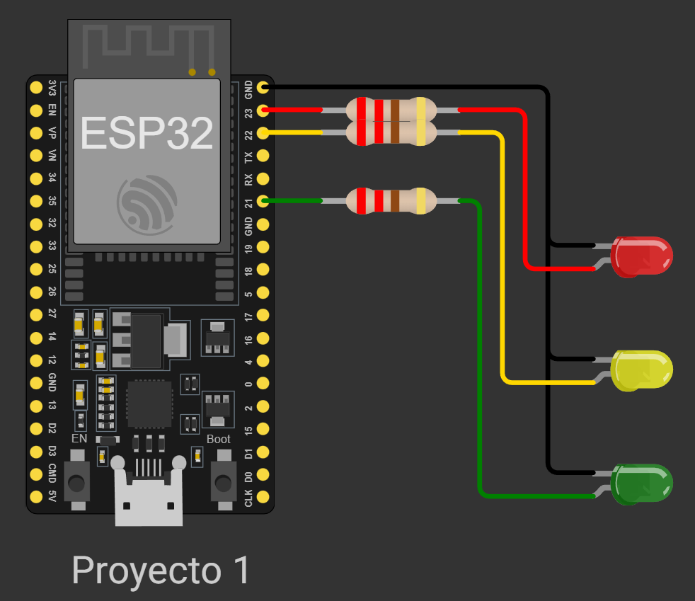
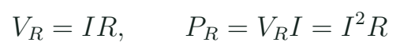
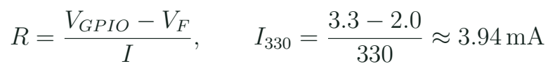

Electrónica con ESP32: del circuito al primer programa
Reconocer la placa clásica y construir una salida LED cuya corriente pueda explicar.
Qué estamos construyendo
El primer objeto del curso es un LED externo con su resistencia. Parece sencillo, pero reúne las cuatro decisiones que repetiremos: de dónde sale la energía, por dónde circula la corriente, qué señal controla el comportamiento y cómo comprobaremos el resultado. El ESP32 es un microcontrolador: ejecuta instrucciones y dispone de periféricos para relacionarlas con entradas y salidas. La placa de desarrollo añade alimentación, conexiones y una interfaz de programación. El módulo metálico y el conector USB cumplen funciones diferentes.

Identifica el texto del módulo antes de elegir la placa en el entorno. El curso usa ESP32 clásico, confirmado para el kit MECRO. Una placa S3 requiere otra selección y otro mapa de pines. En el protoboard, los grupos de contactos y los rieles de alimentación no son todos continuos. Con el circuito desconectado, sigue con el dedo el camino GPIO, resistencia, LED y GND. Si el camino termina en una fila sin continuidad, ningún cambio de código lo completará.
La referencia GND permite interpretar el voltaje de una señal. Medir 3,3 V significa medir una diferencia respecto a esa referencia; no significa que el pin pueda entregar cualquier corriente. Un GPIO representa una orden de baja potencia. Durante las primeras prácticas separaremos esa función de la energía que necesitan servos y motores. Esta distinción será fundamental al reconocer el controlador, los ESC y la batería de un dron.
Voltaje, corriente y resistencia con unidades
El voltaje expresa diferencia de potencial y se mide en voltios. La corriente expresa flujo de carga y se mide en amperios. La resistencia relaciona ambos en un elemento resistivo bajo el modelo que usamos en clase. La analogía del agua ayuda a imaginar presión y caudal, pero el circuito se resuelve con magnitudes eléctricas. La corriente se expresa con frecuencia en miliamperios: 5 mA son 0,005 A. Convertir correctamente la unidad evita seleccionar una resistencia mil veces distinta.

Magnitudes que vamos a distinguir
| Magnitud | Unidad | Qué pregunta responde |
|---|---|---|
| Voltaje | V | Diferencia entre dos nodos |
| Corriente | A o mA | Cuánta carga circula |
| Resistencia | ohm | Relación V/I del resistor |
| Potencia | W | Energía por segundo |
El LED tiene polaridad y una curva corriente–tensión. Para el cálculo inicial tomamos una caída de tensión aproximada del componente y dejamos el resto a la resistencia. Esa aproximación debe declararse: un LED rojo y uno azul no tienen necesariamente la misma caída. El valor que medimos en el GPIO también puede diferir del ideal cuando entrega corriente. El cálculo sirve para proponer el circuito y la medición sirve para contrastar la propuesta.
Un cálculo que decide una pieza
LED rojo del ejercicio
Supón GPIO de 3,3 V, LED con caída aproximada de 2,0 V y objetivo de 5 mA. ¿Qué resistencia propones?
Ver razonamiento del caso
La resistencia recibe 1,3 V. R = 1,3 / 0,005 = 260 ohm. Con 330 ohm, la corriente ideal sería 1,3 / 330 = 3,94 mA. La potencia del resistor sería aproximadamente 5,1 mW. Son cifras del modelo de aula; se comprueban con las piezas reales.

Medimos tensión en paralelo con el componente. Para comenzar basta medir la caída en la resistencia y calcular su corriente. No se coloca el multímetro en modo corriente directamente entre alimentación y GND: esa conexión altera radicalmente el circuito. El docente muestra las puntas, la función y los puntos de medida antes de energizar. El registro debe indicar qué dos nodos se compararon, porque “medí 1,3 V” sin esa referencia no explica el circuito.
Ficha del primer LED
| Dato | Predicción de aula | Dato del equipo |
|---|---|---|
| Resistencia | 330 ohm | Leer y medir |
| Caída en resistor | 1,3 V ideal | Medir nodos |
| Corriente | 3,94 mA ideal | Calcular con V/R |
| Estado lógico | HIGH / LOW | Observar salida |
El recorrido del programa hasta el pin
VS Code es el editor; PlatformIO organiza el proyecto y sus herramientas; Arduino es el framework que aporta funciones de programación. El archivo platformio.ini declara placa, plataforma y bibliotecas. El curso incluye una versión de referencia fijada para ESP32 clásico. Compilar convierte el programa en firmware; cargarlo lo transfiere a la placa; abrir el monitor serie permite observar mensajes. Un error de compilación y un circuito mal conectado requieren comprobaciones diferentes.
Fragmento del primer ejemplo
constexpr uint8_t LED = 23;
uint32_t last = 0;
bool on = false;
void setup() {
pinMode(LED, OUTPUT);
}
void loop() {
uint32_t now = millis();
if (uint32_t(now-last) >= 500) {
last = now;
on = !on;
digitalWrite(LED, on);
}
}setup() prepara la ejecución y loop() vuelve a evaluar la lógica. El nombre LED ayuda a relacionar el esquema con un GPIO concreto. La función digitalWrite() ordena un nivel; el camino eléctrico determina qué ocurre con ese nivel. La versión completa c01_led también emite mensajes. En esta clase reconocemos el patrón temporal; en la tercera explicaremos por qué permite atender otros eventos. Antes de cambiarlo, predice cuánto dura cada estado y cuánto dura el ciclo completo.
Laboratorio: medir, ejecutar y explicar
- Identifica módulo, placa y GPIO23. Revisa la configuración de referencia antes de compilar c01_led.
- Dibuja el camino de corriente. Coloca LED y resistencia con la alimentación desconectada.
- Comprueba continuidad del protoboard y polaridad. Pide una revisión cruzada del esquema.
- Ejecuta primero la versión equivalente en Wokwi y localiza qué variable representa cada componente.
- En hardware, mide tensión en el resistor y calcula corriente. Anota qué valor de resistencia utilizaste.
- Cambia el tiempo de 500 a 250 ms. Predice el periodo total antes de observarlo.
- Conserva esquema, código y una explicación individual del resultado.
Un parpadeo correcto demuestra que esa configuración produjo el comportamiento observado. Para aprender más, cambia una sola condición: tiempo, valor de resistencia o pin documentado. La misma comprobación se hace con el código y con el circuito delante. Si el LED permanece apagado, comienza por alimentación, referencia, polaridad y camino de corriente. Si los mensajes cambian pero la luz no, ya existe una pista que permite separar la ejecución del programa de su salida física.
Aplicación a drones y lectura de investigación
Un sistema UAV utiliza indicadores para distinguir alimentación, enlace, registro o estado del equipo. Un LED aislado puede indicar que hay energía, pero el software puede usarlo para comunicar otra condición. En una estación de banco, un patrón lento podría significar espera y otro representar una lectura pendiente. Esa convención debe estar documentada: el color no explica automáticamente el estado. El alumno propone un indicador para una función del mercado de MECRO y describe qué señal necesitaría para activarlo.
Del circuito sencillo al sistema
| Hoy | Aplicación posterior | Qué añade el sistema |
|---|---|---|
| GPIO y LED | Indicador de estado | Condición documentada |
| GND y tensión | Interfaz de sensor | Niveles compatibles |
| Resistor calculado | Etapa de salida | Balance de potencia |
Para investigar, localiza en la guía de tu placa la función del USB, de EN y de BOOT. Distingue alimentación del módulo y señal de programación. Después revisa la ficha de un LED concreto y busca la condición de corriente a la que se especifica su caída típica. El objetivo no es memorizar toda la hoja de datos, sino reconocer que una cifra técnica viene acompañada de una condición.
Comprobación final
¿HIGH equivale a una fuente ideal que alimenta cualquier carga?
Ver razonamiento del caso
HIGH expresa un estado de salida dentro de límites eléctricos. La corriente y la carga deben ser compatibles con el GPIO y con el circuito.
Práctica guiada
- Mostrar la placa y seguir el camino de corriente antes de abrir el programa.
- Resolver el LED de 330 ohm y comparar con el resistor disponible.
- Ejecutar c01_led y modificar su periodo.
- Registrar una medida y explicar la relación V/R.
Preguntas de cierre
¿Dónde se aplica V = IR?
En el resistor del modelo; el LED se representa con su caída de tensión aproximada.
¿500 ms por cambio producen un ciclo de 500 ms?
No. Encendido y apagado duran 500 ms cada uno: el ciclo completo dura 1 s.
¿Qué confirma compilar?
Que el código se pudo construir para la configuración elegida; el circuito todavía se comprueba aparte.
Entrega
Esquema del LED, cálculo con unidades, primer firmware y registro de observación.
Proyectos MECRO relacionados
- 01. Fundamentos: El Semáforo · Núcleo. GPIO y estados Abrir referencia Wokwi
Fuentes para ampliar
[MECRO] MECRO. Laboratorio Electrónica con ESP32: veinte proyectos.
[BOARD] Espressif Systems. ESP32-DevKitC V4: guía de la placa.
[GPIO] Espressif Systems. GPIO y restricciones de ESP32 clásico.
[PIO] PlatformIO. Plataforma Espressif 32, versión fijada 6.9.0.
[MIT] Agarwal y Lang / MIT OpenCourseWare. 6.002 Circuits and Electronics; texto: Foundations of Analog and Digital Electronic Circuits (2005).